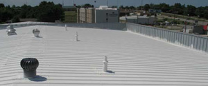
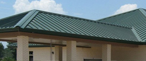

Are You Looking For Quality TownX commercial roofers?
If you are looking for quality commercial roofers serving TownX, look no further! West Roofing, Inc. are locally owned and operated full-service TownX commercial roofers that provide quality commercial roofing services throughout TownX, TX and the surrounding areas. From new roofs and re-roofs to complete tear offs and roof replacement, West Roofing, Inc. are the TownX commercial roofers you can rely on to get your roofing project completed on time, on budget, and with the highest quality results. We have years of experience taking care of commercial roofing customers in TownX, and our large base of satisfied customers continues to grow thanks to the hard work and dedication of our expert TownX commercial roofers.
Don't trust your roof to just any TownX commercial roofer. Contact the TownX metal roofers and the TownX flat roofers that you KNOW can provide you with top quality results and exceptional customer service - call West Roofing, Inc. today!
West Roofing, Inc. - TownX Commercial Roofers
TownX commercial roof repairs are needed for a variety of reasons. Damages to your roof can come from many causes, including severe weather and poor maintenance. Some of the causes of roof damages in TownX are connected to the type of roof you have, though. Whether you are trying to protect and extend the life of an existing roof or you want to protect a new roof, be sure to hire a competent professional when you need TownX roof repairs, and don't put this type of commercial improvement task off! The later you wait to get around to hiring a company to take care of your TownX roof repairs, the more extensive the damage will be, which means more money out of your pocket.
TownX Metal Roofers
When it comes to TownX metal roofers, West Roofing, Inc. has some of the best! Our qualified and professional TownX metal roofers are always ready to provide our customers with top quality services, efficient project completion, and the highest level of standing seam metal roof craftsmanship.
You don't have to take our word for it, though. Hire West Roofing, Inc. today to serve as your TownX metal roofer, and see for yourself why so many other businesses in TownX choose us as their TownX metal roofer.
- TownX commercial roofers
- TownX commercial roofing
- TownX commercial roofers
- TownX roof replacement
- TownX metal roofers
- TownX roof repairs
- TownX flat roofers
- TownX roofing
- TownX roofing services
- TownX roofers near me
- TownX roofing companies
- TownX roofing contractors
TownX Commercial Roof Replacement
Do you need a new roof? If your business is suffering from roof leaks, the answer is probably “yes.” That means you will be looking for reputable TownX commercial roofers to handle the job for you.
TownX commercial roof replacement is important, so don’t let just anyone tamper with your roof. It is an important part of your business, and only an expert TownX commercial roofer should tackle needed repairs and updates such as a roof replacement.
5 Quick Tips On Hiring Reliable TownX commercial roofers
Your roof is one of the most important yet neglected parts of your TownX business. You don't usually think about your roof until it starts to leak or gets damaged. If it is time to have your roof replaced read these 5 quick tips to help you with your TownX roof replacement project.
1. Get a written contract. Get everything in writing before your TownX commercial roofer begins work so that there are no surprises. The bid should be detailed giving you prices for labor, materials, etc.
2. Check out your commercial roofer in TownX before you begin work. Don't just ask for references, pick up the phone and call them. Also make sure that they are licensed and insured.
3. Never pay for the job all up front. Most commercial roofing companies will require some sort of down payment but you should never pay for the entire job before it has been completed.
4. Get multiple bids. Don't just get one or two bids. TownX commercial roof replacement is a big job and you need many bids to compare. Beware of the lowest bidder and remember that you do not want to be ripped off and you get what you pay for.
5. Be wary of con artists or fly by night companies who show up from out of town after a storm. Watch out for low bidders wanting large deposits or contractors who knock on your door, soliciting their services. If a deal sounds too good to be true, it probably is.
Commercial roof replacement is serious work. Take your time, do your homework and you will get through this commercial repair project easily with reliable TownX commercial roofers.